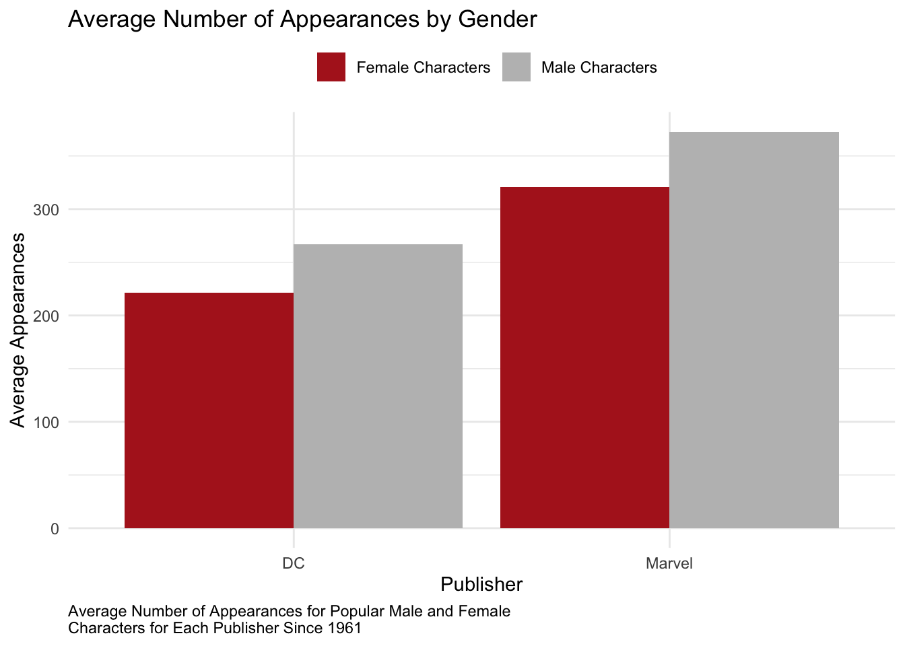
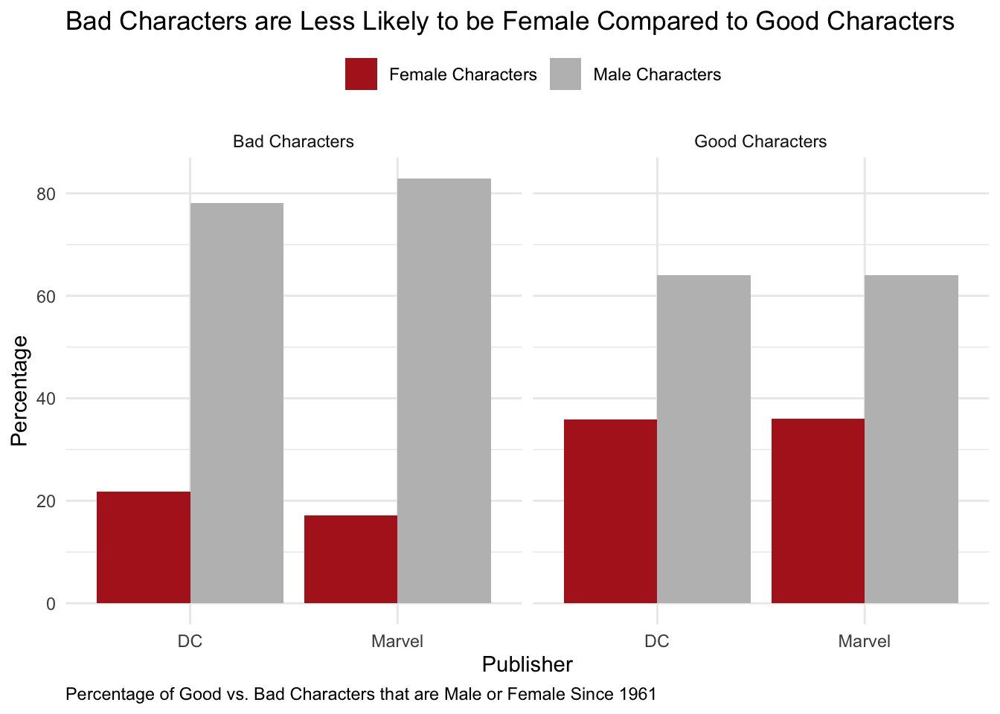
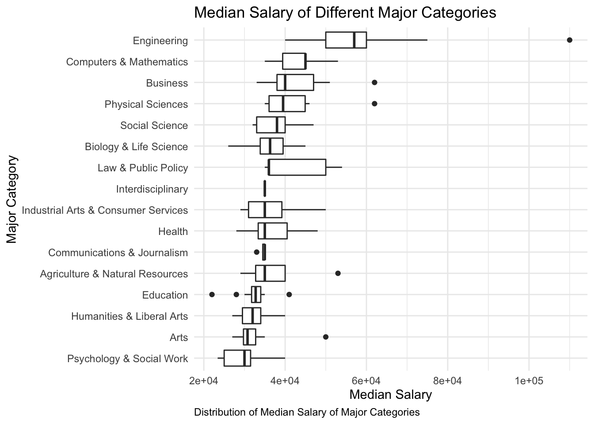
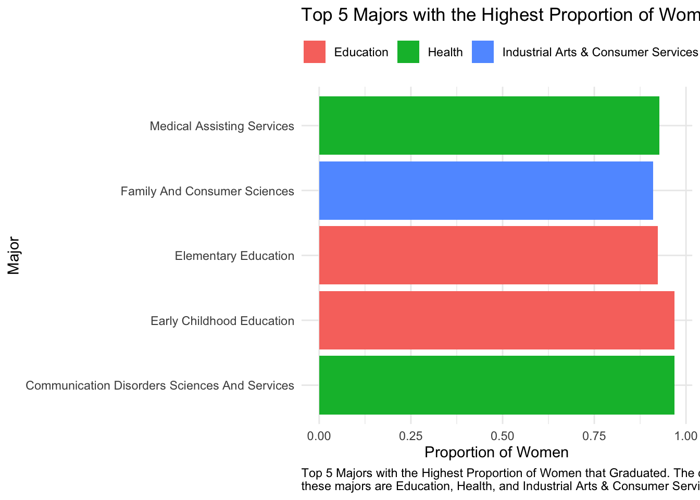
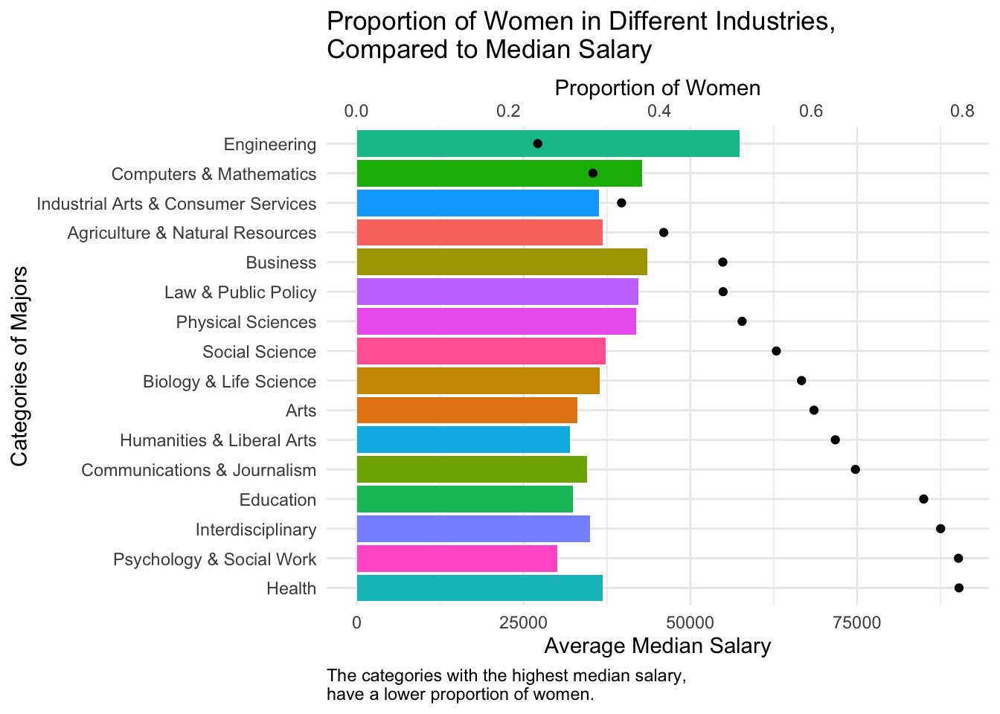

Male Vs. Female Representation in the Comic Book Industry
3-27-2022
Introduction
The Comic Book industry is a male-dominated field, and this is reflected through how the publishers DC and Marvel design their characters. This results in female comic book fans getting less representation through the characters. This is troubling, since both Marvel and DC are such large companies, and have so much influence over kids. People like to identify with comic-book characters, so its important that both males and females get equal representation within this industry.
Methods
The information in this report comes from a data set comprised of all DC and Marvel characters and some attributes about them. Attributes include; the gender of the character, number of appearances of the character, whether they are good or bad, and the date of their first appearance. The data set was provided by fivethirtyeightdata, and includes 23,272 characters. In order to understand the data in this dataset, I have loaded it into RStudio and created visualizations highlighting different insights about these characters.
Results
People often remember the comic-book characters that have the most appearances. Spider-man has the most appearances out of the Marvel Characters. Because of this, Spider-man is one of the most popular comic-book characters of all time. This is why it is important that female characters have a high amount of appearances, so they become more popular. This way, there is more representation for Females in Comic books. Here, we can see the difference in the number of appearances of Male vs Female Characters.

Since the popular female characters get less appearance on average compared to male characters, female characters are less popular than male characters. The male character with the most appearances is Spider-Man. Spider-Man is incredibly popular, and has a large influence over fans of this character. The female character with the most appearances is Suzan Storm. Suzan Storm is much less known than Spider-Man, and in turn has much less influence and popularity. This shows that a lack of female appearances results in lower representation for females within comic books.
Not only do female characters have less appearances than male characters, female characters are stereotyped within comic books as being good. We can see the proportion of female characters that are good vs bad.

Clearly, good characters are much more likely to be female compared to bad characters. The opposite is the same for males, bad characters are more likely to be male compared to good characters. This plays into the stereotype that girls are nicer than boys. This results in less female villains. Female comic book fans that enjoy the villains in these stories get less representation. It is unfair to portray a reality that girls are only nice and ‘good’, it is important that there be flawed female characters, as not every girl can be as ‘good’ as female comic book characters.
Although female comic book characters are underrepresented in the industry as a whole, as time goes on, the amount of new male characters is decreasing.

We can see that the number of new male characters has been declining since 1961. However, here is a drastic decline from 1961-1980, then the slope begins to flatten. This means that the number of new male characters over time has stayed relatively the same since 1980. This shows that improvement in female representation in comic books has slowed. Since comic book characters have become incredibly popular in modern media, thanks to popular Marvel and DC films, it is crucial that female representation continues to improve.
Conclusion
Although more female characters are being introduced, there is drastic under representation of females in Marvel and DC’s characters. Popular female characters have less appearances than popular male characters. This results in fewer female characters being remembered, and fewer female characters growing popularity. This is unfortunate because female comic book fans deserve characters that are well-known.
Male vs. Female Representation amung Different Industries
4-17-2022
Introduction
Living in the modern age, we like to believe that we have solved the problem of unequal pay between men and woman. It is easy to see, however, that this problem is far from solved. Although a female lawyer can make as much as a male lawyer, the issue lies within the proportion of women to men in high paying fields. If only men can secure high paying jobs, is that truly equal?
Methods
The information provided in this report is derived from the 2010-2012 American Community Survey Public Use Microdata Sample files. It is comprised of 173 different majors, each given a category(such as Health), with attributes including data about recent college graduates who graduated with said major. Some of these attributes include; the total amount of students that graduated with that major, the median salary of those that graduated with that major, and the proportion of women who graduated with that major.
Results
I chose to explore more into the categorical variable of Major Categories. Shown is a graph showing the distributions of the median salaries of each category.

I found that the category with the highest median salary, and the highest standard deviation was Engineering, and the category with the lowest median salary was Psychology and Social Work. This means that Engineering pays the most on average compared to the other categories. The fact that Engineering has the highest standard deviation also means that some are being paid much more.
I also chose to explore more into the numerical variable of the Proportion of Women in each major. Pictured is a graph of the 5 majors with the highest proportion of female graduates.

The majors with the highest proportion of women are early childhood education, communication disorders sciences and services, and medical assisting services. These majors are categorized as ‘Education’, and ‘Health’. Education is in the lowest three categories for average median salary.
Since it seemed that the categories with the highest proportion of women seemed to have the lowest average median salary, I wanted to explore this more, and see exactly how median salary and proportion of women are related.

According to the data, major categories with the lowest proportion of women, have the highest average median salary. The category ‘Engineering’, which is the highest paying category, also has the lowest proportion of women. In fact, as the proportion of women goes up, the median salary seems to go down.
There are a number of different reasons that this seems to be the trend. One is that it is more difficult for women to get hired into high paying jobs. The variable of median salary only includes those with a full-time, year-round job. The reason that Engineering may have such a low proportion of women is because they simply don’t hire many women. Another reason could be that women are disciminised in male-dominated fields, and are more likely to switch majors.
Conclusion
It is easy to believe that men and women are equal in the modern age when it comes to the workforce. Through my research I have discovered that that is simply not the case.
We must continue to advocate for women’s rights in the workforce, and continue getting women into male-dominated fields, as those are the industries with the highest paying jobs.
My recommendation for future research is to continue to gain insights into why exactly it is so difficult for women to break into these high paying fields such as engineering. Is it discrimination? We now know that there is a low proportion of women in high paying fields. Now we need to find out why, and solve this issue.